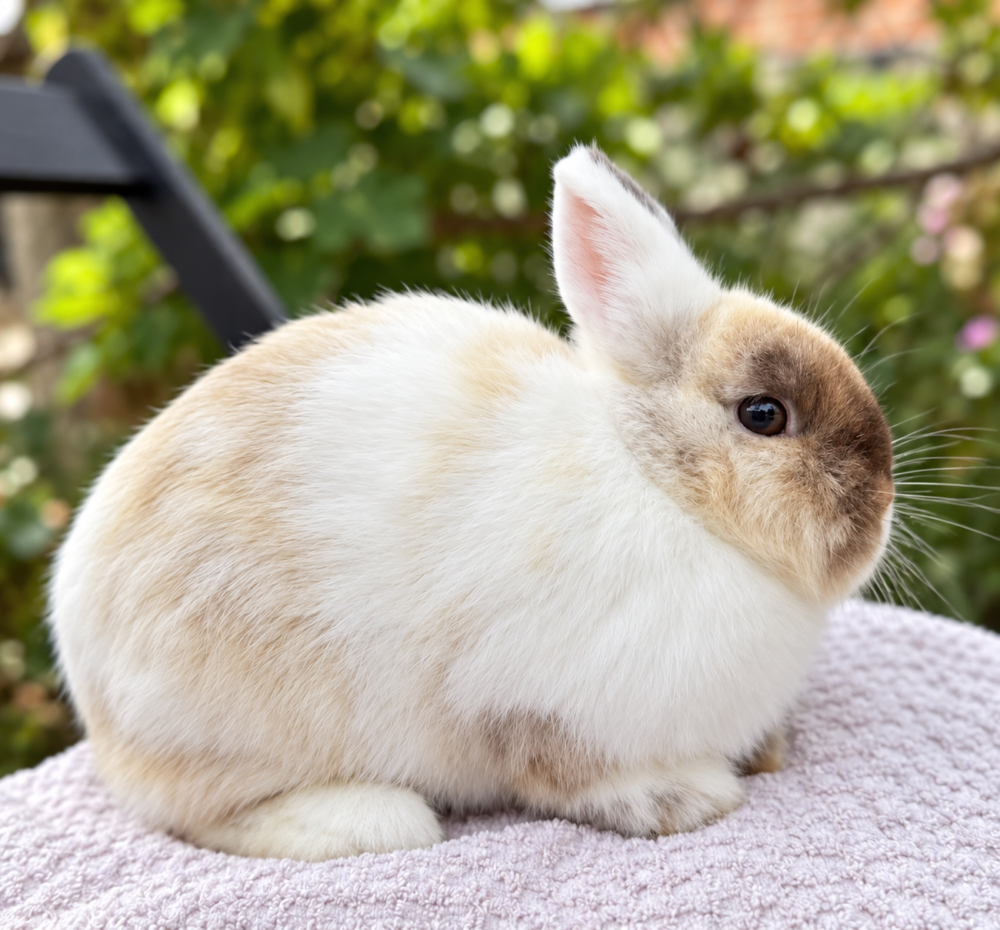
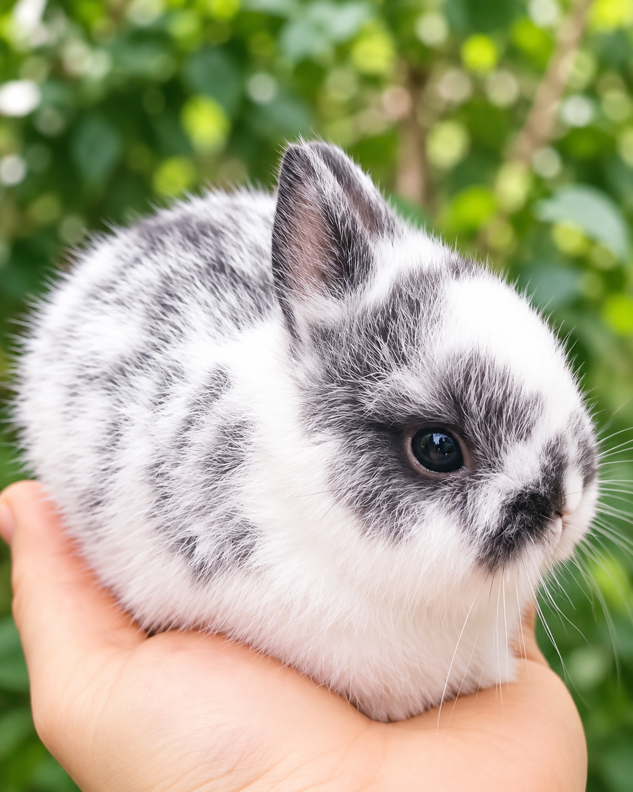
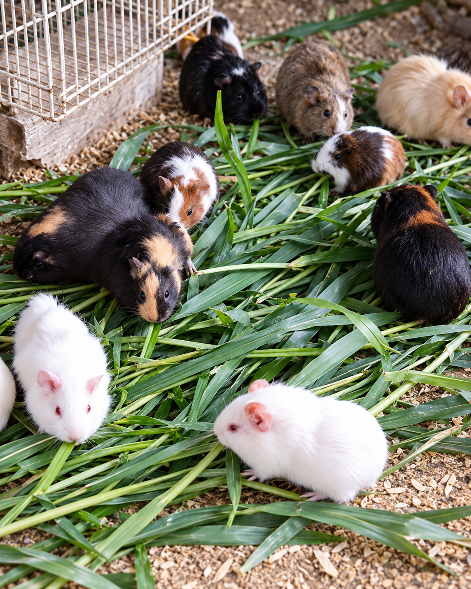
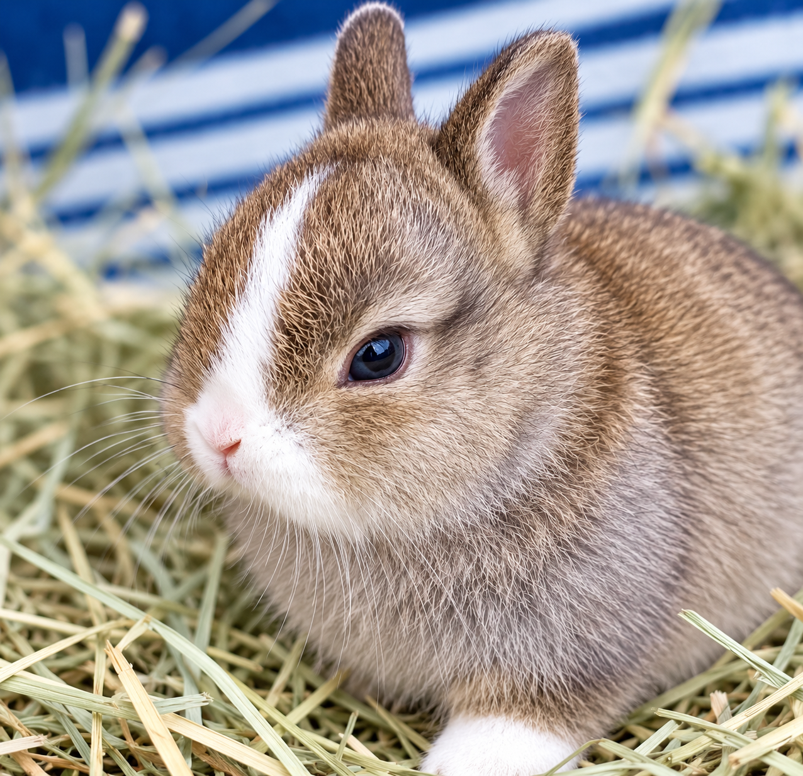
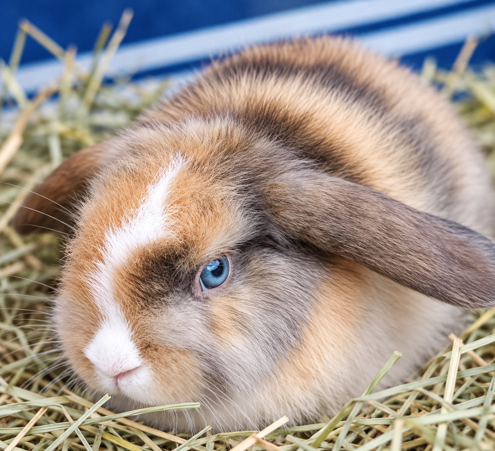
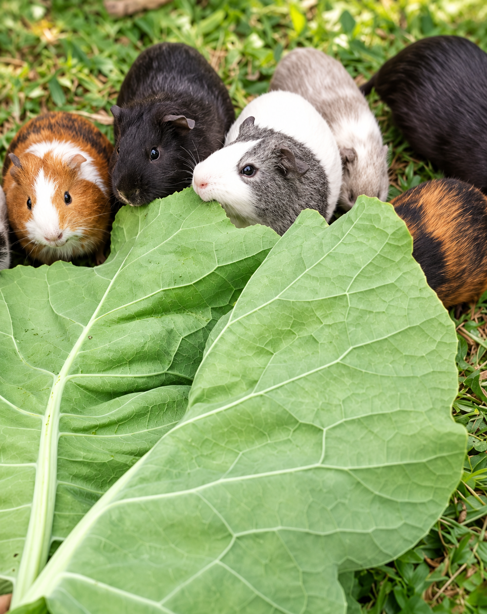
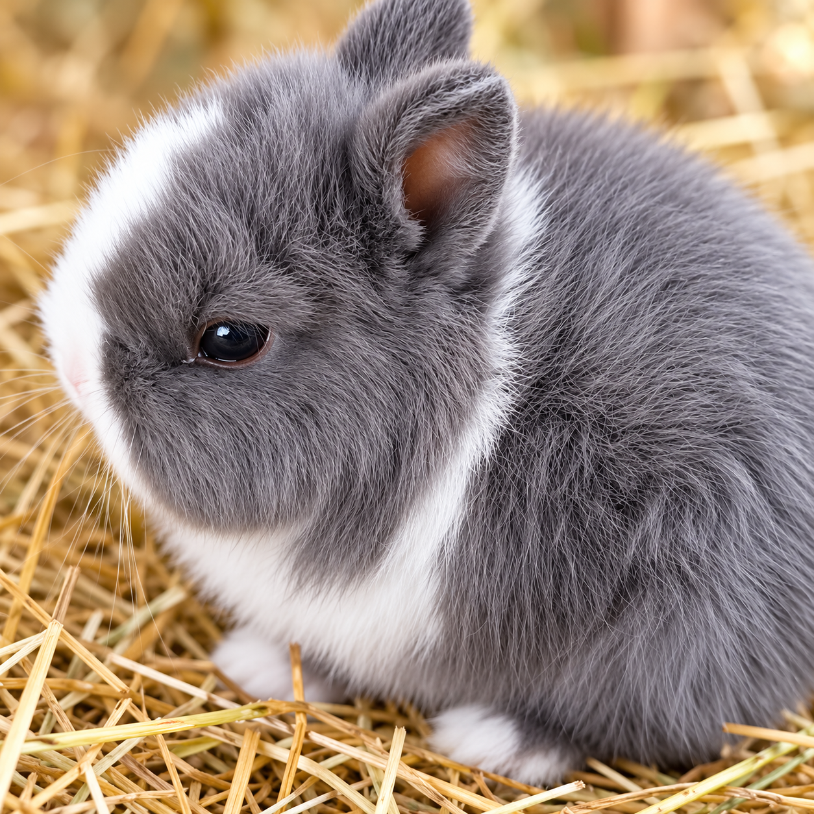
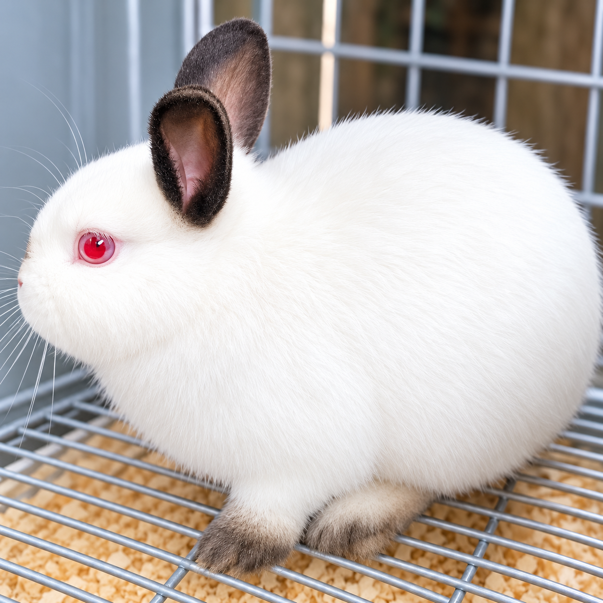

Cuidado
Atenção em cada etapa da criação.

Mini coelhos • Porquinhos da Índia • Gaspar - SC
Coelhos criados com cuidado e carinho.
Mini coelhos e porquinhos da Índia para companhia, criados com atenção em cada detalhe.
Pequena criação,
muito carinho.

Sobre a Fazendinha
A Fazendinha Nobre é um pequeno criatório de mini coelhos e porquinhos da Índia em Gaspar, Santa Catarina.
Cada animal é acompanhado de perto, e o contato é sempre direto: você conversa com quem cria, tira suas dúvidas e combina a entrega do jeito que for melhor.
Conheça os animaisNosso jeito de criar
Atenção em cada etapa da criação.
Atendimento direto para tirar dúvidas e orientar a escolha.
Coelhos pensados para fazer parte da família.
Os animais

01Pequenos, curiosos e ótimos companheiros para o dia a dia. Uma escolha para quem quer um animal de estimação próximo e tranquilo dentro de casa.

02Sociáveis e carinhosos, os porquinhos da Índia são companhia simples e cheia de personalidade para toda a família.
Ver disponíveisDisponíveis
Escolha a raça e fale direto com a Fazendinha Nobre pelo WhatsApp para saber quem está disponível.

Mini coelhoUma das menores raças de coelho, com orelhas curtinhas e carinha arredondada.
Tenho interesse
Mini coelhoOrelhas caídas, corpo compacto e um jeitinho calmo que conquista qualquer um.
Tenho interesse
RoedorSociáveis e comunicativos, adoram companhia e interagem com toda a família.
Tenho interesseComo funciona
Veja os animais disponíveis.
Entre em contato pelo WhatsApp.
Converse diretamente com a Fazendinha Nobre.
Combine os detalhes diretamente com o criatório.
Galeria
Veja nossos coelhinhos, novidades e acompanhe um pouco mais da nossa rotina.


 Conhecer o Instagram
Conhecer o Instagram
Depoimentos
[Depoimento do cliente 1]
[Depoimento do cliente 2]
[Depoimento do cliente 3]
Contato
Fale com a Fazendinha Nobre e conheça os animais disponíveis.